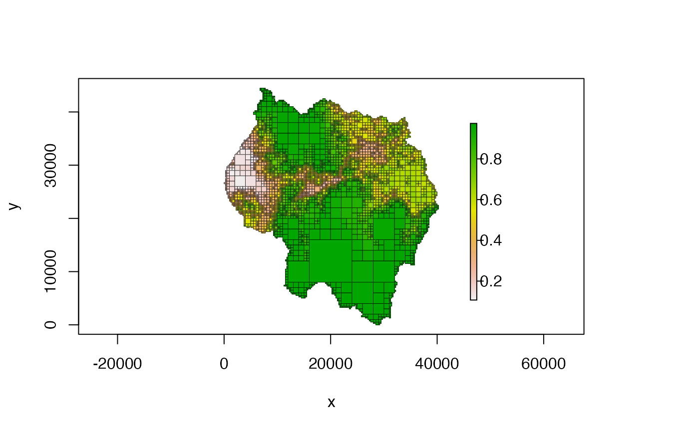
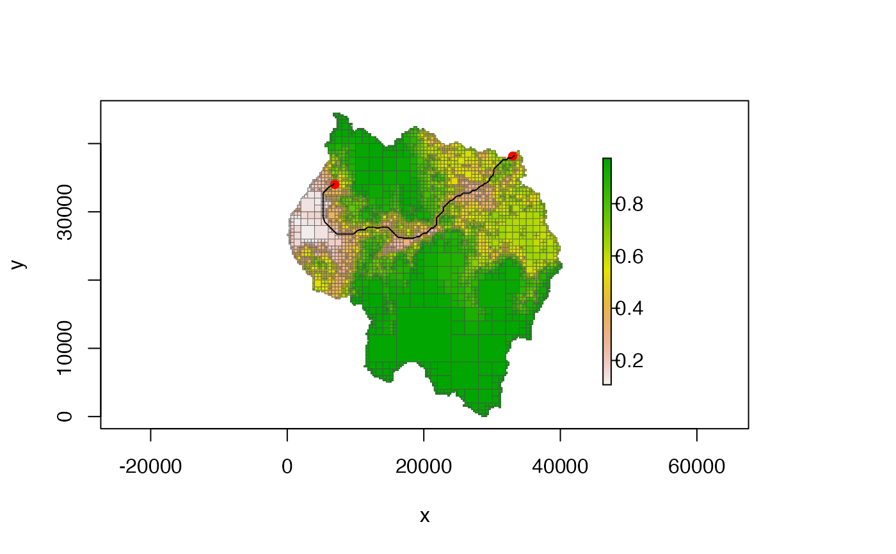

Finds the least cost path (LCP) between two points, using a quadtree as a resistance surface
# S4 method for LcpFinder,numeric find_lcp(x, y, use_original_end_points = FALSE)
| x | the |
|---|---|
| y | numeric vector with two elements - the x and y coordinates of the the destination point |
| use_original_end_points | boolean; by default the start and end points
of the returned path are not the points given by the user but instead the
centroids of the cells that those points fall in. If this parameter is set
to |
find_lcp returns a five column matrix representing the
least cost path. It has the following columns:
x: x coordinate of this point (centroid of the cell)
y: y coordinate of this point (centroid of the cell)
cost_tot: the cumulative cost up to this point
dist_tot: the cumulative distance up to this point - note
that this is not straight-line distance, but instead the distance along
the path
cost_cell: the cost of the cell that contains this point
If no path is possible between the two points, a 0-row matrix with the previously described columns is returned.
IMPORTANT NOTE: the use_original_end_points options ONLY changes the
x and y coordinates of the first and last points - it doesn't change the
cost_tot or dist_tot columns. This means that even though the
start and end points have changed, the cost_tot and dist_tot
columns still represent the cost and distance using the cell centroids of
the start and end cells.
See the vignette 'quadtree-lcp' for more details and examples (i.e. run
vignette("quadtree-lcp", package = "quadtree"))
lcp_finder() creates the LCP finder object used as
input to this function. find_lcps() calculates all LCPs
whose cost-distance is less than some value. summarize_lcps()
outputs a summary matrix of all LCPs that have been calculated so far.
####### NOTE ####### # see the "quadtree-lcp" vignette for more details and examples: # vignette("quadtree-lcp", package = "quadtree") #################### library(quadtree) # create a quadtree data(habitat) qt <- quadtree(habitat, split_threshold = .1, adj_type = "expand") plot(qt, crop = TRUE, na_col = NULL, border_lwd = .4)# define our start and end points start_pt <- c(6989, 34007) end_pt <- c(33015, 38162) # create the LCP finder object and find the LCP lcpf <- lcp_finder(qt, start_pt) path <- find_lcp(lcpf, end_pt) # plot the LCP plot(qt, crop = TRUE, na_col = NULL, border_col = "gray30", border_lwd = .4)